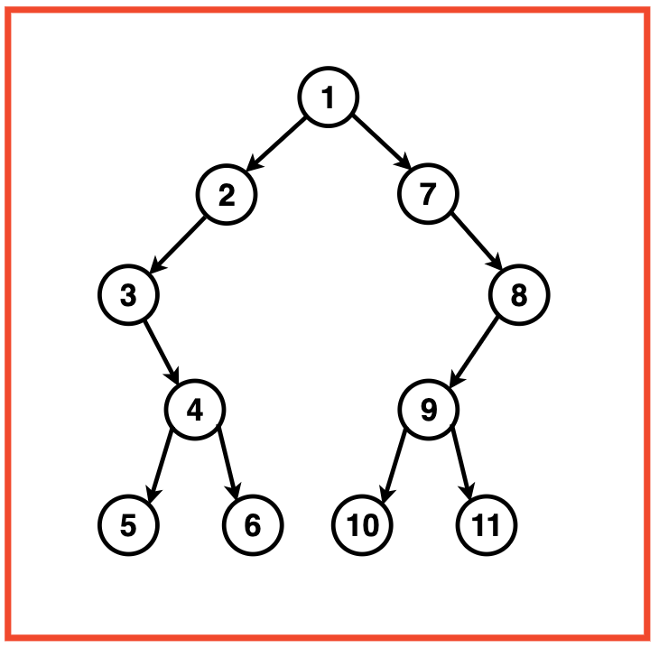
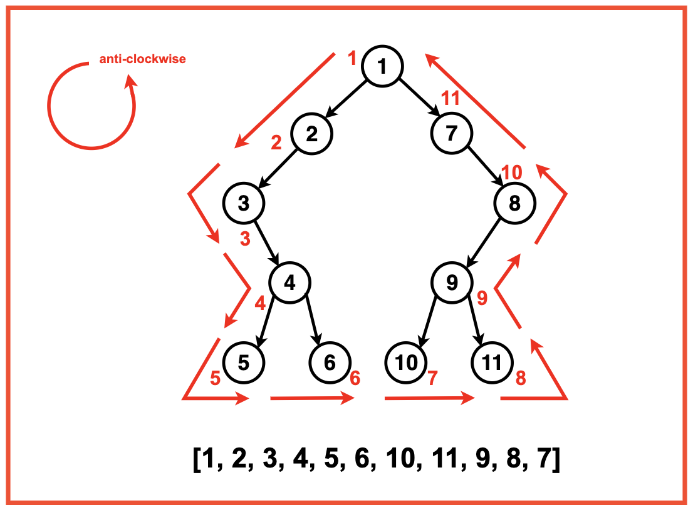
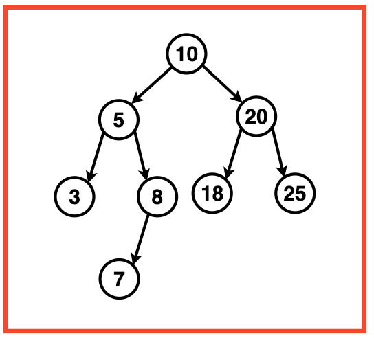
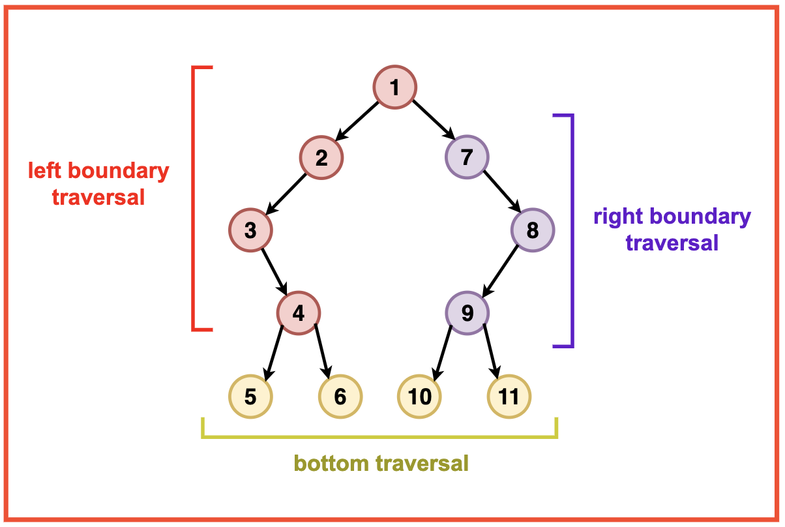
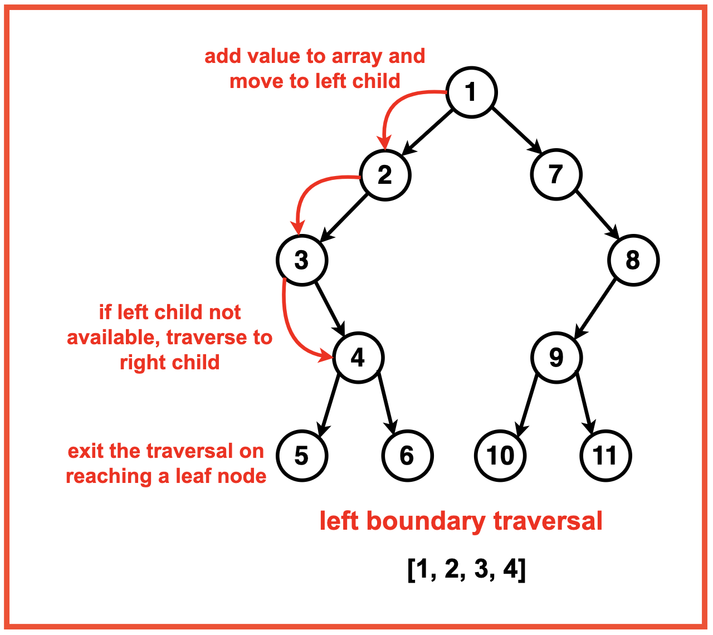
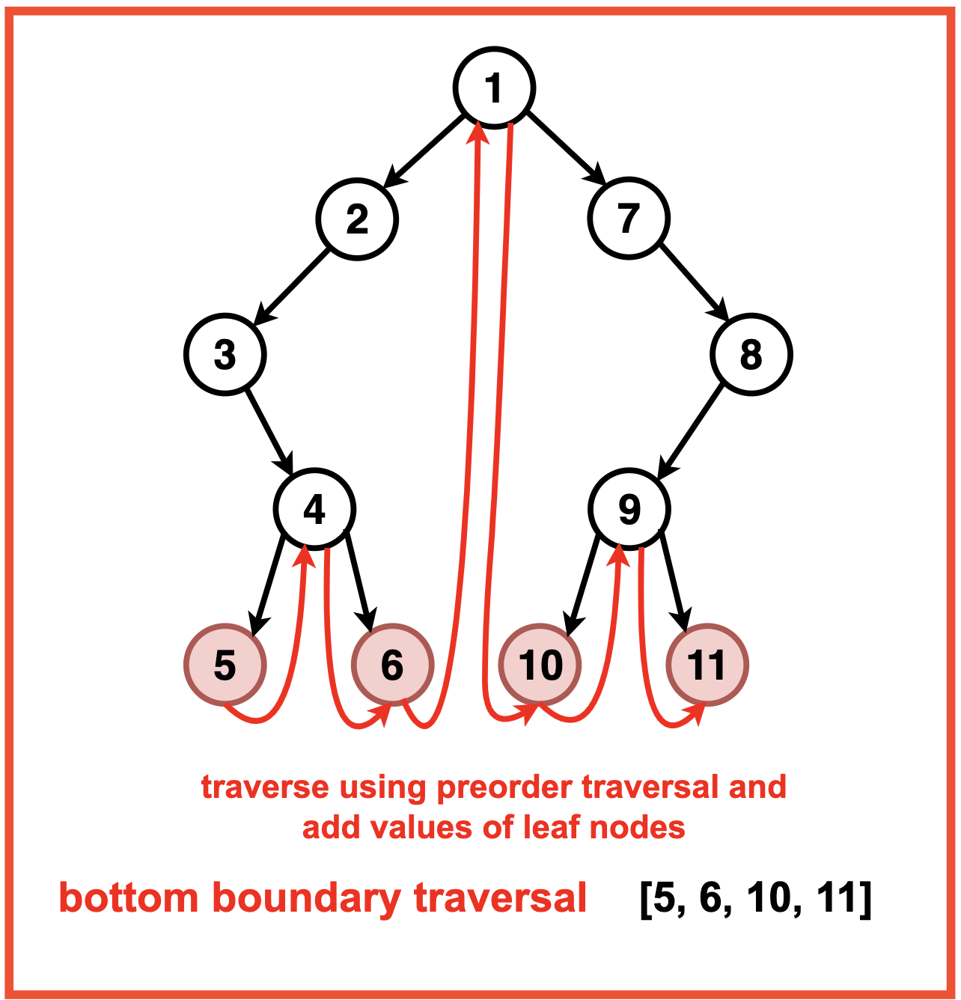
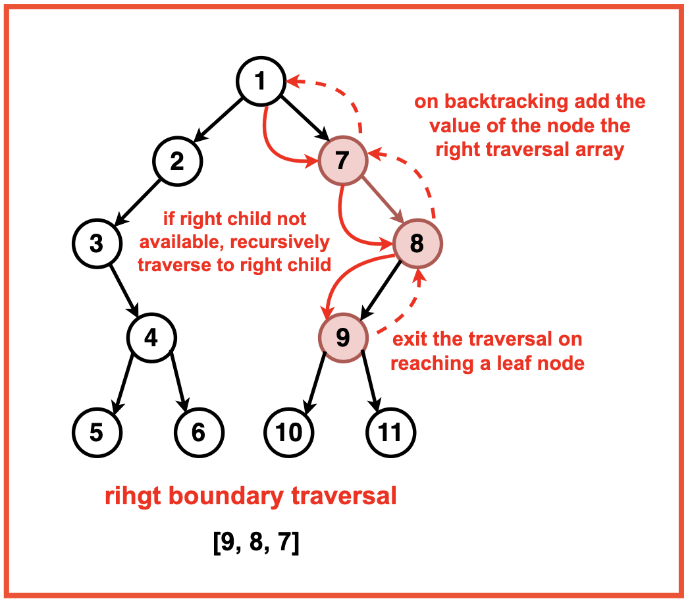

Problem Statement: Given a Binary Tree, perform the boundary traversal of the tree.
The boundary traversal is the process of visiting the boundary nodes of the binary tree in the anticlockwise direction, starting from the root.
Examples
Example 1:Input:Binary Tree: 1 2 7 3 -1 -1 8 -1 4 9 -1 5 6 10 11
Output: Boundary Traversal: [1, 2, 3, 4, 5, 6, 10, 11, 9, 8, 7]Explanation: The boundary traversal of a binary tree involves visiting its boundary nodes in an anticlockwise direction:
Starting from the root, we traverse from: 1
The left side traversal includes the nodes: 2, 3, 4
The bottom traversal include the leaf nodes: 5, 6, 10, 11
The right side traversal includes the nodes: 9, 8, 7
We return to the root and the boundary traversal is complete.
Example 2:Input:Binary Tree: 10 5 20 3 8 18 25 -1 7 -1 -1
Output : Boundary Traversal: [10, 5, 3, 7, 8, 18, 25, 20]Explanation: The boundary traversal of a binary tree involves visiting its boundary nodes in an anticlockwise direction:
Starting from the root, we traverse from: 10
The left side traversal includes the nodes: 5
The bottom traversal include the leaf nodes: 3, 7, 8, 18, 25
The right side traversal includes the nodes: 20
We return to the root and the boundary traversal is complete.
Disclaimer: Don’t jump directly to the solution, try it out
yourself first.
Optimal Approach
Algorithm / Intuition
The boundary traversal algorithm should be divided into three main parts traversed in the anti-clockwise direction:

Left Boundary: Traverse the left boundary of the tree. Start from the root and keep moving to the left child; if unavailable, move to the right child. Continue this until we reach a leaf node.
Bottom Boundary: Traverse the bottom boundary of the tree by traversing the leaf nodes using a simple preorder traversal. We check if the current node is a lead, and if so, its value is added to the boundary traversal array.
Right Boundary: The right boundary is traversed in the reverse direction, similar to the left boundary traversal starting from the root node and keep moving to the right child; if unavailable, move to the left child. Nodes that are not leaves are pushed into the right boundary array from end to start to ensure that they are added in the reverse direction.
Algorithm:
Step 1: Initialise an empty array to store the boundary traversal nodes.
Step 2: Create a helper function to check if a node is a leaf. This is to avoid cases where there will be an overlap in the traversal of nodes.
We exclude leaf nodes when adding left and right boundaries as they will already be added when in the bottom boundary.
Step 3: Initialise a recursive function `addLeftBoundary` and a vector to store the left traversal.
Start from the root of the tree.
Traverse down the left side of the tree until we reach a leaf node. For each non-leaf node, add its value to the result list.
Traverse to its left child. If unavailable, call the recursion function to its right child.

Step 4: Implement a recursive function `addLeafNodes` and a vector to store the bottom traversal.
If the current node is a leaf, add its value to the result list.
Recursively travel to the current nodes left and right subtrees in a preorder fashion.

Step 5: Implement a recursive function `addRightBoundary` and a vector to store the right traversal.
Start from the root of the tree.
Traverse to the right most side of the tree until we reach a leaf node.
For each non-leaf node, call the recursive function to its right child; if unavailable, call to its left child.
While the recursion backtracks, add the current node’s value to the result list.

Code
#include <iostream>
#include <vector>
using namespace std;
// Node structure for the binary tree
struct Node {
int data;
Node* left;
Node* right;
// Constructor to initialize
// the node with a value
Node(int val) : data(val), left(nullptr), right(nullptr) {}
};
class Solution {
public:
// Function to check
// if a node is a leaf
bool isLeaf(Node* root) {
return !root->left && !root->right;
}
// Function to add the
// left boundary of the tree
void addLeftBoundary(Node* root, vector<int>& res) {
Node* curr = root->left;
while (curr) {
// If the current node is not a leaf,
// add its value to the result
if (!isLeaf(curr)) {
res.push_back(curr->data);
}
// Move to the left child if it exists,
// otherwise move to the right child
if (curr->left) {
curr = curr->left;
} else {
curr = curr->right;
}
}
}
// Function to add the
// right boundary of the tree
void addRightBoundary(Node* root, vector<int>& res) {
Node* curr = root->right;
vector<int> temp;
while (curr) {
// If the current node is not a leaf,
// add its value to a temporary vector
if (!isLeaf(curr)) {
temp.push_back(curr->data);
}
// Move to the right child if it exists,
// otherwise move to the left child
if (curr->right) {
curr = curr->right;
} else {
curr = curr->left;
}
}
// Reverse and add the values from
// the temporary vector to the result
for (int i = temp.size() - 1; i >= 0; --i) {
res.push_back(temp[i]);
}
}
// Function to add the
// leaves of the tree
void addLeaves(Node* root, vector<int>& res) {
// If the current node is a
// leaf, add its value to the result
if (isLeaf(root)) {
res.push_back(root->data);
return;
}
// Recursively add leaves of
// the left and right subtrees
if (root->left) {
addLeaves(root->left, res);
}
if (root->right) {
addLeaves(root->right, res);
}
}
// Main function to perform the
// boundary traversal of the binary tree
vector<int> printBoundary(Node* root) {
vector<int> res;
if (!root) {
return res;
}
// If the root is not a leaf,
// add its value to the result
if (!isLeaf(root)) {
res.push_back(root->data);
}
// Add the left boundary, leaves,
// and right boundary in order
addLeftBoundary(root, res);
addLeaves(root, res);
addRightBoundary(root, res);
return res;
}
};
// Helper function to
// print the result
void printResult(const vector<int>& result) {
for (int val : result) {
cout << val << " ";
}
cout << endl;
}
int main() {
// Creating a sample binary tree
Node* root = new Node(1);
root->left = new Node(2);
root->right = new Node(3);
root->left->left = new Node(4);
root->left->right = new Node(5);
root->right->left = new Node(6);
root->right->right = new Node(7);
Solution solution;
// Get the boundary traversal
vector<int> result = solution.printBoundary(root);
// Print the result
cout << "Boundary Traversal: ";
printResult(result);
return 0;
}
import java.util.ArrayList;
import java.util.List;
// Node structure for the binary tree
class Node {
int data;
Node left;
Node right;
// Constructor to initialize
// the node with a value
Node(int val) {
data = val;
left = null;
right = null;
}
}
public class Solution {
// Function to check
// if a node is a leaf
boolean isLeaf(Node root) {
return root.left == null && root.right == null;
}
// Function to add the
// left boundary of the tree
void addLeftBoundary(Node root, List<Integer> res) {
Node curr = root.left;
while (curr != null) {
// If the current node is not a leaf,
// add its value to the result
if (!isLeaf(curr)) {
res.add(curr.data);
}
// Move to the left child if it exists,
// otherwise move to the right child
if (curr.left != null) {
curr = curr.left;
} else {
curr = curr.right;
}
}
}
// Function to add the
// right boundary of the tree
void addRightBoundary(Node root, List<Integer> res) {
Node curr = root.right;
List<Integer> temp = new ArrayList<>();
while (curr != null) {
// If the current node is not a leaf,
// add its value to a temporary list
if (!isLeaf(curr)) {
temp.add(curr.data);
}
// Move to the right child if it exists,
// otherwise move to the left child
if (curr.right != null) {
curr = curr.right;
} else {
curr = curr.left;
}
}
// Reverse and add the values from
// the temporary list to the result
for (int i = temp.size() - 1; i >= 0; --i) {
res.add(temp.get(i));
}
}
// Function to add the
// leaves of the tree
void addLeaves(Node root, List<Integer> res) {
// If the current node is a
// leaf, add its value to the result
if (isLeaf(root)) {
res.add(root.data);
return;
}
// Recursively add leaves of
// the left and right subtrees
if (root.left != null) {
addLeaves(root.left, res);
}
if (root.right != null) {
addLeaves(root.right, res);
}
}
// Main function to perform the
// boundary traversal of the binary tree
List<Integer> printBoundary(Node root) {
List<Integer> res = new ArrayList<>();
if (root == null) {
return res;
}
// If the root is not a leaf,
// add its value to the result
if (!isLeaf(root)) {
res.add(root.data);
}
// Add the left boundary, leaves,
// and right boundary in order
addLeftBoundary(root, res);
addLeaves(root, res);
addRightBoundary(root, res);
return res;
}
// Helper function to
// print the result
void printResult(List<Integer> result) {
for (int val : result) {
System.out.print(val + " ");
}
System.out.println();
}
public static void main(String[] args) {
// Creating a sample binary tree
Node root = new Node(1);
root.left = new Node(2);
root.right = new Node(3);
root.left.left = new Node(4);
root.left.right = new Node(5);
root.right.left = new Node(6);
root.right.right = new Node(7);
Solution solution = new Solution();
// Get the boundary traversal
List<Integer> result = solution.printBoundary(root);
// Print the result
System.out.print("Boundary Traversal: ");
solution.printResult(result);
}
}
class Node:
def __init__(self, val):
self.data = val
self.left = None
self.right = None
class Solution:
def isLeaf(self, root):
"""
Function to check if a node is a leaf
"""
return not root.left and not root.right
def addLeftBoundary(self, root, res):
"""
Function to add the left boundary of the tree
"""
curr = root.left
while curr:
if not self.isLeaf(curr):
# If the current node is not a leaf,
# add its value to the result
res.append(curr.data)
# Move to the left child if it exists,
# otherwise move to the right child
if curr.left:
curr = curr.left
else:
curr = curr.right
def addRightBoundary(self, root, res):
"""
Function to add the right boundary of the tree
"""
curr = root.right
temp = []
while curr:
if not self.isLeaf(curr):
# If the current node is not a leaf,
# add its value to a temporary vector
temp.append(curr.data)
# Move to the right child if it exists,
# otherwise move to the left child
if curr.right:
curr = curr.right
else:
curr = curr.left
# Reverse and add the values from
# the temporary vector to the result
for i in range(len(temp) - 1, -1, -1):
res.append(temp[i])
def addLeaves(self, root, res):
"""
Function to add the leaves of the tree
"""
if self.isLeaf(root):
# If the current node is a leaf,
# add its value to the result
res.append(root.data)
return
# Recursively add leaves of
# the left and right subtrees
if root.left:
self.addLeaves(root.left, res)
if root.right:
self.addLeaves(root.right, res)
def printBoundary(self, root):
"""
Main function to perform the
boundary traversal of the binary tree
"""
res = []
if not root:
return res
# If the root is not a leaf,
# add its value to the result
if not self.isLeaf(root):
res.append(root.data)
# Add the left boundary, leaves,
# and right boundary in order
self.addLeftBoundary(root, res)
self.addLeaves(root, res)
self.addRightBoundary(root, res)
return res
# Helper function to
# print the result
def printResult(result):
for val in result:
print(val, end=" ")
print()
# Creating a sample binary tree
root = Node(1)
root.left = Node(2)
root.right = Node(3)
root.left.left = Node(4)
root.left.right = Node(5)
root.right.left = Node(6)
root.right.right = Node(7)
solution = Solution()
# Get the boundary traversal
result = solution.printBoundary(root)
# Print the result
print("Boundary Traversal:", end=" ")
printResult(result)
// Node structure for the binary tree
class Node {
constructor(val) {
this.data = val;
this.left = null;
this.right = null;
}
}
class Solution {
// Function to check if a node is a leaf
isLeaf(root) {
return !root.left && !root.right;
}
// Function to add the left boundary of the tree
addLeftBoundary(root, res) {
let curr = root.left;
while (curr) {
// If the current node is not a leaf, add its value to the result
if (!this.isLeaf(curr)) {
res.push(curr.data);
}
// Move to the left child if it exists, otherwise move to the right child
if (curr.left) {
curr = curr.left;
} else {
curr = curr.right;
}
}
}
// Function to add the right boundary of the tree
addRightBoundary(root, res) {
let curr = root.right;
let temp = [];
while (curr) {
// If the current node is not a leaf, add its value to a temporary vector
if (!this.isLeaf(curr)) {
temp.push(curr.data);
}
// Move to the right child if it exists, otherwise move to the left child
if (curr.right) {
curr = curr.right;
} else {
curr = curr.left;
}
}
// Reverse and add the values from the temporary vector to the result
for (let i = temp.length - 1; i >= 0; --i) {
res.push(temp[i]);
}
}
// Function to add the leaves of the tree
addLeaves(root, res) {
// If the current node is a leaf, add its value to the result
if (this.isLeaf(root)) {
res.push(root.data);
return;
}
// Recursively add leaves of the left and right subtrees
if (root.left) {
this.addLeaves(root.left, res);
}
if (root.right) {
this.addLeaves(root.right, res);
}
}
// Main function to perform the boundary traversal of the binary tree
printBoundary(root) {
let res = [];
if (!root) {
return res;
}
// If the root is not a leaf, add its value to the result
if (!this.isLeaf(root)) {
res.push(root.data);
}
// Add the left boundary, leaves, and right boundary in order
this.addLeftBoundary(root, res);
this.addLeaves(root, res);
this.addRightBoundary(root, res);
return res;
}
}
// Helper function to print the result
function printResult(result) {
for (let val of result) {
console.log(val + " ");
}
console.log();
}
// Creating a sample binary tree
let root = new Node(1);
root.left = new Node(2);
root.right = new Node(3);
root.left.left = new Node(4);
root.left.right = new Node(5);
root.right.left = new Node(6);
root.right.right = new Node(7);
let solution = new Solution();
// Get the boundary traversal
let result = solution.printBoundary(root);
// Print the result
console.log("Boundary Traversal: ");
printResult(result);
Output Boundary Traversal: 1 2 4 5 6 7 3
Complexity Analysis
Time Complexity: O(N) where N is the number of nodes in the Binary Tree.
Adding the left boundary of the Binary Tree results in the traversal of the left side of the tree which is proportional to the the height of the three hence O(H) ie. O(log2N). In the worst case that the tree is skewed the complexity would be O(N).
For the bottom traversal of the Binary Tree, traversing the leaves is proportional to O(N) as preorder traversal visits every node once.
Adding the right boundary of the Binary Tree results in the traversal of the right side of the tree which is proportional to the the height of the three hence O(H) ie. O(log2N). In the worst case that the tree is skewed the complexity would be O(N).
Since all these operations are performed sequentially, the overall time complexity is dominated by the most expensive operation, which is O(N).
Space Complexity: O(N) where N is the number of nodes in the Binary Tree to store the boundary nodes of the tree.
O(H) or O(log2N) Recursive stack space while traversing the tree. In the worst case scenario the tree is skewed and the auxiliary recursion stack space would be stacked up to the maximum depth of the tree, resulting in an O(N) auxiliary space complexity.
Video Explanation
Special thanks to Gauri Tomar for contributing to this article on takeUforward. If you also wish to share your knowledge with the takeUforward fam, please check out this article